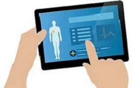

Tecnologias De La Informacion y Las Telecomunicaciones

De acuerdo con Medicare.gov, la web oficial del gobierno estadounidense para la atención médica, la telemedicina: “busca mejorar la salud de un paciente, permitiendo la comunicación interactiva en tiempo real entre el paciente, y el médico o profesional a distancia. Esta comunicación electrónica conlleva el uso de equipos de telecomunicaciones interactivas que incluyen, como equipamiento mínimo, audio y vídeo”. En menos palabras podríamos llamar telemedicina a la prestación a distancia de servicios clínicos de salud gracias a la infraestructura de telecomunicaciones.

Se consideran tres tipos de telemedicina
>> Monitorización de pacientes a distancia: Esto permite controlar en sus casas a los pacientes con enfermedades crónicas. Se consigue a través del uso de dispositivos que recopilan datos sobre niveles de azúcar en la sangre, presión arterial y otros signos vitales. Los cuidadores pueden revisar esos datos al momento desde el hospital, y decidir si es necesaria algún tipo de acción.
>> Tecnología de almacenamiento y envío: Consiste en el almacenamiento de datos clínicos para su envío a otros centros médicos. Por ejemplo, así se pueden tomar imágenes de rayos X en ambulatorio y enviarlas al momento a un centro especializado para su interpretación.
>> Telemedicina interactiva: Este tipo de telemedicina permite a médicos y pacientes comunicarse en tiempo real. Básicamente se trata de una videoconferencia, para la cual el paciente puede quedarse en su domicilio o acudir al centro de salud más cercano.
La telemedicina no podría desarrollarse sin una serie de dispositivos digitales que sirven de apoyo al profesional sanitario. El hardware necesario para trabajar online se ha reducido, actualmente cualquier dispositivo con conexión a internet (portátil, ordenador de mesa, tablet o móvil), puede utilizarse como medio de telemedicina interactiva, mientras que el software se ha desarrollado en los últimos años.
Una de las claves de la telemedicina y su aplicación al sector sanitario es la seguridad digital. Tanto las leyes nacionales como la legislación comunitaria referida a la protección de datos, ha generado un marco legal para proteger la información personal que se gestiona en canales online, lo cual es fundamental en el caso de los datos referidos a la salud. Uno de los mayores avances de la telemedicina en los últimos años han sido los relacionados con la seguridad online. Un software sanitario que trabaja en la nube debe estar preparado para hacer frente a todo tipo de ataques, además es imprescindible que disponga de copias de backup, y procesos que aseguren la integridad de todos los archivos.